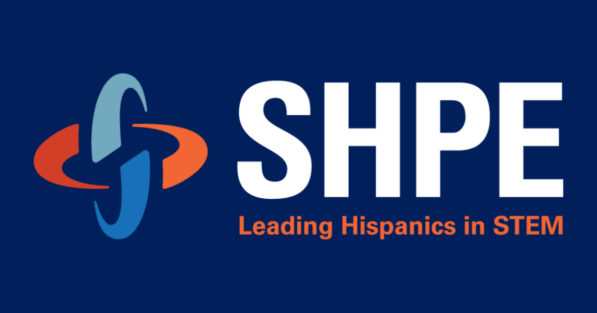
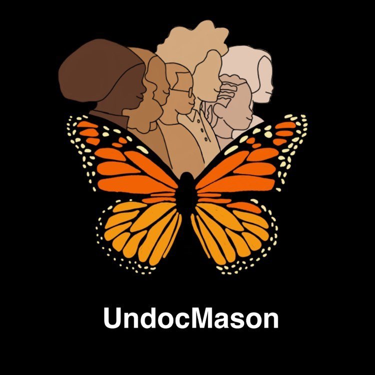

About me
Why Did I Get Into Software Engineering?
After attending UndocuHacks (a national hackathon for activists fighting for comprehensive immigration reform), it completely changed my career outlook. It opened my eyes to the power of tech and its influence in uplifting social justice movements.
Interests
Since the hackathon, I've had a passion for building websites and mobile apps. My end goal is to become an engineer that builds apps to uplift marginalized communities and grassroots organizations! The following are a list of things I've found interesting in my development journey, however, since the world of tech is always changing, it's only right to assume that my interest would also change with them.
- Web Applications Development
- Mobile Applications Development
- Data Science
- DevOps
Skills
The following is a range of proficiency levels relative to programming languages I know:
HTML5
CSS3
JavaScript
Python
MySQL
JAVA
For a more comprehensive list of my skills, my resume is attached below!
Projects
Unarmed Police Shootings Data Analysis
Description: A project aimed to analyze a police shooting data set and use python to determine set questions.
Link: Github Link
SHPE GMU Chapter
Description: A project aimed to analyze a police shooting data set and use python to determine set questions.
Link: Soon to be deployed! (8/24/2020)
UndocuMason
Description: A project aimed to analyze a police shooting data set and use python to determine set questions.
Link: Soon to be deployed! (8/24/2020)